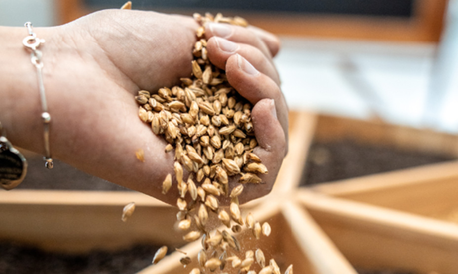
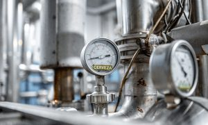

Que hacemos
Malteado, produccion del mosto, fermentacion, flitracion y envasado
A la hora de diseñar una cerveza, los expertos pueden variar los sabores, cuerpo y aromas.Los resultados dependeran de la combinacion de los ingredientes fundamentales
¿COMO SE ELABORA LA CERVEZA?

Malteado: Proceso donde la cebada se convierte en malta
Elaboracion del mosto: Los maestros cervezeros transforman la malta en mosto

Fermentacion:Una vez enfriado el mosto, nuestros profesionales le añaden la levadura para que fermente, obteniendo como resultado la cerveza
Filtracion:La cerveza normalmente se filtra para eliminar la levadura y las proteínas y que sea brillante, y luego se transfiere a un tanque de acabado
Envasado:Cuando la cerveza se embotella, puede pasar por un proceso final llamado pasteurización para garantizar su vida útil y su estabilidad. Una vez concluido este paso, ya se encuentra lista para que alguien la abra, la sirva y disfrute de ella.